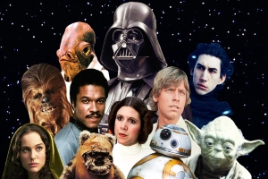
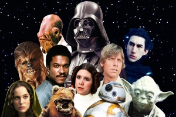

Banda da Cantina fala sobre turne.
Banda da Cantina conta como foi reencontro após 13 anos separados "Parece que foi ontem". Comenta Jackson sobre o grupo que se reuni novamente. Veja a matéria no HAN'SHOW.
Big Brother edição-31975.
Nesta edição os brothers serão exilados em Tatooine, lindo e desértico planeta com dois sóis lar dos fazendeiros de umidade,onde também ocorerá mais um Grande Premio de POD-RACE'S. Conheça os brothers que irão participar da nova edição. Em que o premio é a galaxia. "Estamos em casa", Diz Vader para Luck.
Casos de família.
A apresentadora do Sitcom, Padmé conta a comovente historia de pai e filho que se reencontram depois de anos separados."Achei o pai um pão".Diz Padmé a nossa redação. Este menino foi muito minado pelos tios,eu quando era criança tive que correr por minha liberdade.Comenta Vader sobre os caprichos de Luke.